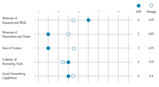

Competitive Analysis
We compared AIR’s website with the websites of 19 organizations that engage in similar research. Our list of 19 competitors began at the kickoff meeting with organizations mentioned by our client. We expanded this initial list based on library research, further conversations with our client, and interactions with participants. The competitor list covers all five of AIR’s focus areas and includes both for-profit and non-for-profit organizations of varying size.
We brainstormed five dimensions relevant to AIR’s goals and rated competitors on each one:
- Showcase of Research Work
- Showcase of Employee Talent
- Ease of Contact
- Usability of Recruiting Tools
- Social Networking Capabilities

An overview of the competitive analysis, showing how AIR compares to the average of the competitors we examined.
Click to enlarge.
An overview of the competitive analysis, showing how AIR compares to the average of the competitors we examined.
Click to enlarge.